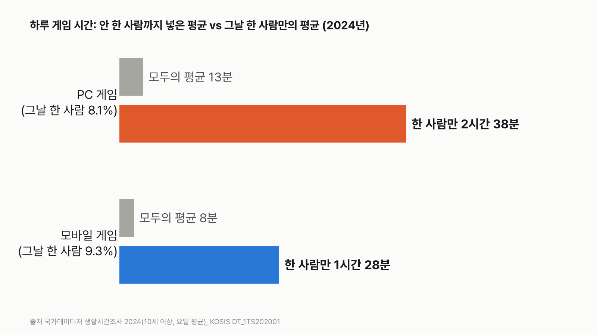

하루 게임 시간 평균 21분, 그런데 하는 사람만 보면 2시간 38분
'평균 21분'은 게임을 안 한 90% 넘는 사람의 0분까지 넣고 나눈 값이에요. 게임을 하는 사람에게 하루는 21분이 아니라 2시간이 넘어요.

3줄 요약
- 2024년 10세 이상 한국인의 컴퓨터·모바일 게임 시간은 하루 평균 21분이에요(PC 13분 + 모바일 8분).
- 그런데 그날 PC 게임을 한 사람(8.1%)만 보면 2시간 38분, 모바일 게임을 한 사람(9.3%)만 보면 1시간 28분이에요.
- 20대의 게임·놀이 시간은 하루 평균 54분이에요. 2014년(31분)보다 23분 늘었어요.
| 10세 이상, 하루(2024년) | 모두의 평균 | 그날 한 사람 비율 | 한 사람만의 평균 |
|---|---|---|---|
| PC 게임 | 13분 | 8.1% | 2시간 38분 |
| 모바일 게임 | 8분 | 9.3% | 1시간 28분 |
평균과 '한 사람만 보면', 한 줄로
100명 중 8명이 PC 게임을 2시간 38분씩 하고 92명은 0분이면, 100명의 평균은 13분이 돼요.
그래서 '평균 게임 시간'은 짧게 나오고, 게임을 하는 사람의 실제 하루와는 거리가 멀어요.
PC 게임은 길게, 모바일 게임은 짧게
그날 모바일 게임을 한 사람(9.3%)이 PC 게임을 한 사람(8.1%)보다 조금 많아요.
하지만 한 번 앉으면 PC 게임이 더 길어요. PC 2시간 38분, 모바일 1시간 28분으로 70분 차이예요.
20대: 게임·놀이 54분
| 20대 하루 게임·놀이 | 2014년 | 2019년 | 2024년 |
|---|---|---|---|
| 모두의 평균 | 31분 | 46분 | 54분 |
| 그날 한 사람만 | 1시간 45분 | 2시간 14분 | 2시간 39분 |
| 그날 한 사람 비율 | 29.3% | 34.5% | 34.2% |
20대의 평균 게임·놀이 시간은 10년 새 31분에서 54분이 됐어요. 하는 사람 비율은 2019년과 2024년이 34%대로 비슷해요. 늘어난 건 한 사람이 하는 시간이에요.
2024년 20대 가운데 그날 PC 게임을 한 사람(23.3%)만 보면 2시간 53분이에요.
책 읽기와 모바일 게임, 그날 한 사람이 더 많은 쪽은 책 읽기 vs 모바일 게임에서 겨뤄 봤어요.
숫자를 다시 보며
'하루 평균'은 조사한 날 게임을 안 한 사람까지 모두 넣은 값이에요. 게임을 하는 사람이 얼마나 오래 하는지는 '한 사람만의 평균'을 봐야 해요. 여러분의 하루 게임 시간은 21분 쪽에 가까운가요, 2시간 쪽에 가까운가요?
이 숫자는 어디서 왔나요
출처
기준일 2024년 조사(5년마다)예요. 2026년 11월 16일에 받았어요.
| 데이터 | 출처 | 쓰임 |
|---|---|---|
| 생활시간조사 2014·2019·2024 | 국가데이터처, KOSIS DT_1TS202001 | 게임 시간 평균, 행위자 비율, 행위자 평균 시간 |
어떻게 셌나요
- 자료: 국가데이터처 「생활시간조사」 2024년, 10세 이상, 요일 평균. KOSIS DT_1TS202001(행위자 비율·평균 시간).
- 모두의 평균: 그날 게임을 안 한 사람(0분)까지 넣은 평균이에요.
- 그날 한 사람 비율(행위자 비율): 조사한 날 일지에 그 행동을 10분 이상 적은 사람의 비율이에요.
- 한 사람만의 평균(행위자 평균 시간): 그날 그 행동을 한 사람만 놓고 낸 평균이에요.
- 컴퓨터·모바일 게임 21분: 온라인/PC 게임 13분 + 모바일 게임 8분이에요. 기타 게임(0분)은 더해도 같아요.
- 게임·놀이: PC·모바일 게임에 집단 게임(보드게임 등)과 기타 게임을 더한 큰 분류예요. 20대 비교는 세 해 모두 있는 이 분류로 했어요.
한계 4가지
이 데이터로 말할 수 없는 것
- 일지는 이틀 치만 적어요. 평소엔 하는데 그날 안 한 사람은 '안 한 사람'으로 들어가요.
- 다른 일을 하면서 한 게임(예: 이동하면서 한 모바일 게임)은 일지에 주된 행동으로 적었을 때만 세요.
- PC와 모바일 게임을 나눈 건 2019년부터예요. 2014년은 '컴퓨터·모바일 게임' 하나라 PC·모바일 따로는 견주지 않았어요.
- 분 단위 반올림 값이라 PC와 모바일을 더한 값이 조금 다를 수 있어요.
새 글 나오면 받아 보기
피드 리더 앱에 이 사이트 주소를 한 번 넣어 두면, 새 글이 올라올 때 앱에 떠요. 가입이나 메일 주소는 필요 없어요.
받는 법 보기
- 피드 리더 앱을 하나 골라요. 새 글을 모아 보여 주는 앱이에요. 예를 들면 Feedly나 Inoreader가 있어요. 둘 다 무료고 웹·휴대폰에서 써요.
- 앱에서 '구독 추가'(+)를 누르고 아래 주소를 붙여 넣어요.
- 끝이에요. 새 글이 올라오면 앱 목록에 떠요.
https://protofu.github.io/opendata-insight/feed.xmlFeedly를 쓴다면 여기를 눌러 바로 추가할 수도 있어요.